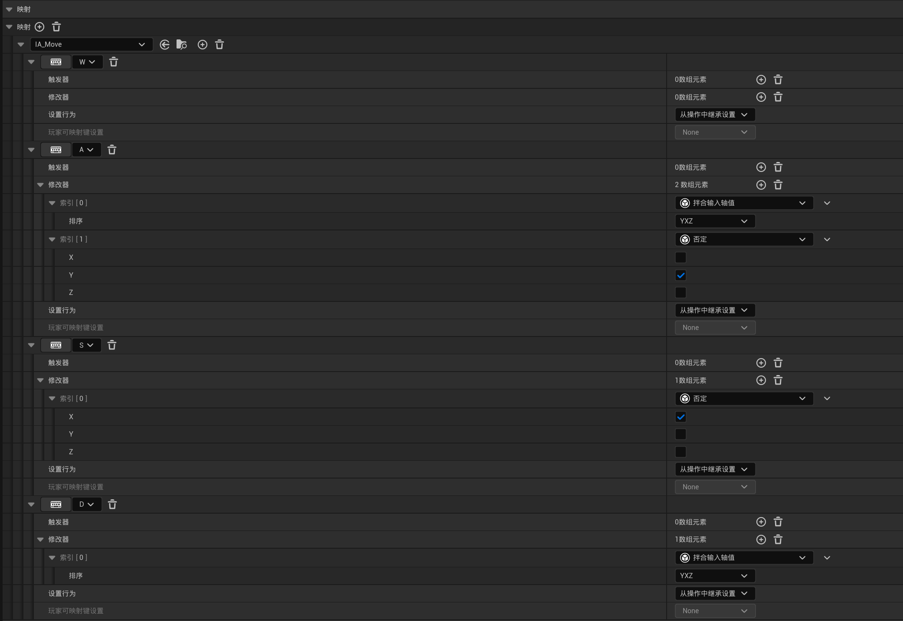
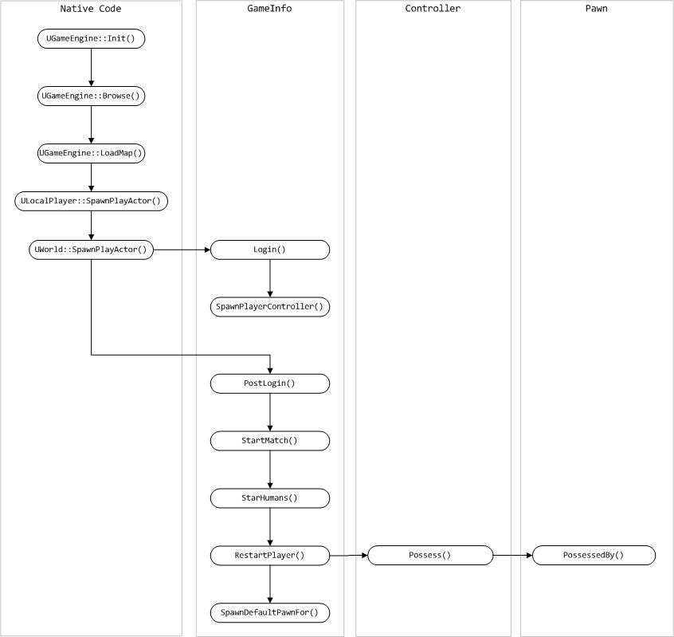

现在我们已经有了动画蓝图，并且根据玩家速度输出不同的动画效果，那么接下来就要实现通过输入控制玩家移动。
#增强输入
这里用增强输入来实现按键控制。**增强输入系统(Enhanced Input System)**是 UE5 用于处理输入的功能框架，旨在提供比传统输入系统更强大、更灵活的功能。它引入了一些新特性和改进，使得输入管理变得更加高效和可扩展。
#如何使用
我用的是 UE5.4，直接内置了增强输入。之前使用输入绑定需要在「项目设置」「输入」进行设置，但是也仅仅是绑定，一些额外的设置如长按、连续按下还是需要用户自己实现，而且不同行为模式下的输入可能绑定到不同事件，总而言之就是很不方便。
但是现在点开显示轴和操作映射现已废弃，请改用增强输入操作和输入映射上下文。这里提到两个概念，分别是「输入操作」和「输入映射上下文」。前者其实就是一个事件，用于绑定到 C++ 中的 callback，后者则是将一组按键与输入操作绑定，并且能够在运行时动态装卸，从而达到在不同场景中同一按键对应不同行为的效果。
在「内容浏览器」中，可以通过「输入」「输入操作」创建一个 Input Action，并命名为 IA_Move，同时通过「输入」「输入映射情景」创建一个 Input Mapping Context，并命名为 IMC_PlayerCtx。
#Input Action
打开 IA_Move，这里值得关注的是「值类型」和「修改器」。
值类型有 4 个选项，分别是
-
数字（布尔）：相当于之前的 Action Mapping；
-
Axis1D（浮点）：相当于之前的 Axis Mapping；
-
Axis2D（Vector2D）：扩展 Axis Mapping，能够获取 Y 轴上的值（输入默认在 X 轴上）；
-
Axis3D（向量）：继续扩展，能够获取 Z 轴上的值；
修改器则是对输入的值执行一定的 Filter，它是一个数组类型，前一个 Modifier 的输出会作为后一个 Modifier 的输入，可以类比 Shell 中的管道操作符 |。比如有个 Modifier 的类型是「否定」（中文翻译问题，其实就是取反），那么只用这一个 Modifier 就是将输入值取反，如果在后面再加一个「否定」，那结果就是原来的数不变。
因为本项目中角色移动是在二维平面上，所以值类型选择 Axis2D，角色的左右移动和前后移动分别从输出值(Vector2D)的 X 和 Y 轴上取值。
#Input Mapping Context
打开 IMC_PlayerCtx，在这里可以创建映射。我们将 WASD 四个键绑定到 IA_Move 中。因为 IA_Move 的输出值类型是 Axis2D，并且所有值默认输入到 X 轴上，为了能使 A/D 输入值应用到 Y 轴上，需要用到名为「拌合输入轴值」的 Modifier，它其实就是交换两个轴，这里选「YXZ」，即交换 X 轴和 Y 轴，这样原本应用到 X 轴上的变化，经过 Modifier 以后就会转而应用到 Y 轴上。
那么同一轴上的两个想反的方向就可以用「否定」解决，也就是取反。
最后结果如下所示。
#总结
当按下按键 Input 时，首先会检测当前 IMC，假设该按键存在绑定且绑定到操作 Action，那么首先应用 IMC 中的 {Input, Action} 的 Modifier，将输出值送给 Action 自身的修改器，再做一次 Action_Modifier，两轮 Modifier 后的值才送到 callback 的入参。可以简单地用下图表示：
#行为绑定
这里我们需要新建一个派生自 PlayerController 的类 RPlayerController，用于实现控制玩家的逻辑。
关于 Controller、Pawn 和 Character 的关系：
Character 由 Pawn 和 Controller 两部分组成。
Controller 只负责告诉 Pawn 做什么及如何表现，可以认为是 Pawn 的大脑。它将拥有(possess) Pawn，同理 Pawn 会被拥有(possessed by)。
Pawn 是世界中可控的 Actor 的物理表示。它不关心 Character 是由用户控制还是由 AI 控制，只接受 Controller 的命令，并使角色和世界进行物理交互。Pawn 具有网格物体、碰撞，也能产生声音、播放动画。
任何时刻每个 Pawn 都有一个单独的 Controller，比如 Player Controller 和 AI Controller。运行时允许修改一个 Pawn 的 Controller（同样也是修改了 Controller 控制的 Pawn），从而将发起命令与执行命令解耦。很常见的是一些游戏中的「托管」功能，相当于把自己的 Pawn 交给了 AIController。
而 Character 派生自 Pawn，在 Pawn 的基础上完善了更多功能，比如自带 SkeletalMeshComponent，可启用使用骨架的高级动画。本质上来讲，用 Controller 控制一个 Character，就是在控制其 Pawn。

为了实现移动，可以在头文件中添加如下成员
Components/RPlayerController.hclass UInputMappingContext; class UInputAction; UCLASS() class ACTIONRPG_API ARPlayerController : public APlayerController { GENERATED_BODY() public: ARPlayerController(); protected: void BeginPlay() override; void SetupInputComponent() override; private: UPROPERTY(EditDefaultsOnly, Category = "Input") TObjectPtr<UInputMappingContext> PlayerInputCtx; UPROPERTY(EditDefaultsOnly, Category = "Input") TObjectPtr<UInputAction> MoveAction; void Move(const struct FInputActionValue&); };
其中 SetupInputComponent() 函数会在关卡开始时自动被调用，用于初始化输入组件。Move() 函数则是按下按键时触发的移动行为逻辑，为了能被正确绑定，它的参数列表只需要有一个 const FInputActionValue& 类型的入参。
函数实现如下所示，已给出注释。
Components/RPlayerController.cpp#include "Components/RPlayerController.h" #include "EnhancedInputSubsystems.h" #include "EnhancedInputComponent.h" ARPlayerController::ARPlayerController() { bReplicates = true; // 该控制器的实例将在网络游戏中进行复制，以便在不同客户端之间同步控制器的状态和行为 } void ARPlayerController::BeginPlay() { Super::BeginPlay(); // check 宏保证后面的指针非空 check(PlayerInputCtx); // 设置 IMC 与优先级(0) UEnhancedInputLocalPlayerSubsystem* SubSystem = ULocalPlayer::GetSubsystem<UEnhancedInputLocalPlayerSubsystem>(GetLocalPlayer()); if (SubSystem) { SubSystem->AddMappingContext(PlayerInputCtx, 0); } // 显示鼠标 bShowMouseCursor = true; // 设置鼠标样式 DefaultMouseCursor = EMouseCursor::Default; FInputModeGameAndUI InputMode; // 当玩家将鼠标移动到屏幕边缘时，游戏不会阻止鼠标光标离开游戏窗口 InputMode.SetLockMouseToViewportBehavior(EMouseLockMode::DoNotLock); // 设置在捕获鼠标时不隐藏鼠标光标 // 具有更高的优先级，可以在捕获鼠标输入时覆盖 bShowMouseCursor 的设定 InputMode.SetHideCursorDuringCapture(false); SetInputMode(InputMode); } void ARPlayerController::SetupInputComponent() { Super::SetupInputComponent(); // 将 Move() 绑定到 Action 上，CastChecked 保证结果非空 UEnhancedInputComponent* EnhancedInputComp = CastChecked<UEnhancedInputComponent>(InputComponent); EnhancedInputComp->BindAction(MoveAction, ETriggerEvent::Triggered, this, &ARPlayerController::Move); } void ARPlayerController::Move(const FInputActionValue& Value) { // 根据控制器偏角，获取 xOy 平面上的方向向量 const FRotator& GroundRotation = FRotator(0.0f, GetControlRotation().Yaw, 0.0f); const FRotationMatrix& GroundRotationMatrix(GroundRotation); const FVector& ForwardVector = GroundRotationMatrix.GetUnitAxis(EAxis::X); const FVector& RightVector = GroundRotationMatrix.GetUnitAxis(EAxis::Y); // 输入值中的 X 应用到前后方向，Y 应用到左右方向 const FVector2D& InputAxis = Value.Get<FVector2D>(); if (APawn* Pawn = GetPawn()) { Pawn->AddMovementInput(ForwardVector, InputAxis.X); Pawn->AddMovementInput(RightVector, InputAxis.Y); } }
为什么上面 40 行，怎么保证 InputComponent 的类型转换成功呢？需要将「项目设置」「输入」「默认类」中的「默认玩家输入类」设置为 EnhancedPlayerInput，同理「默认输入组件类」设置为 EnhancedInputComponent。这样在生成时就会用这两个类型。
#应用到游戏中
我们已经实现了一个自定义的 Player Controller，接下来要做的事就是在游戏中使用它。在「项目设置」「地图和模式」中，我们可以看到在「选中的游戏模式」下面，有很多类，其中默认的「玩家控制器类」是 PlayerController。那么目的很明确了，我们还需要新建一个自定义的 Game Mode，覆盖「默认的游戏模式」，就能设置默认的「玩家控制器类」为 RPlayerController 了。
所谓 Game Mode，顾名思义就是游戏模式，也可以理解为游戏规则。一个游戏可以有任意数量的 Game Mode，但是在一个时间点，只能使用一个 Game Mode。毕竟规则只能有一个。
接下去就是新建一个派生自 GameModeBase 的类，命名为 RGameModeBase。然后创建对应的蓝图类，命名为 BP_RGameModeBase。在蓝图类中，先进行如下设置
这样游戏就会使用 BP_RMyPlayerController 处理输入，并将命令发送给 BP_Aura 上，达到控制的效果。最后将 PlayerStart 拖拽到世界中，运行游戏，发现已经能通过 WASD 控制玩家移动了。